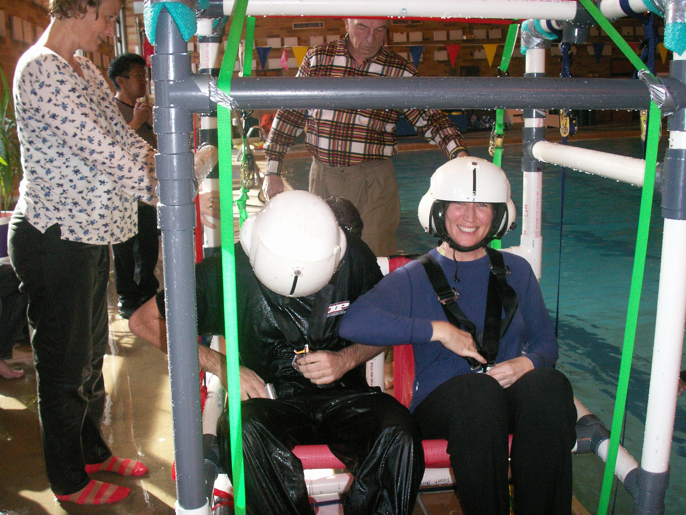
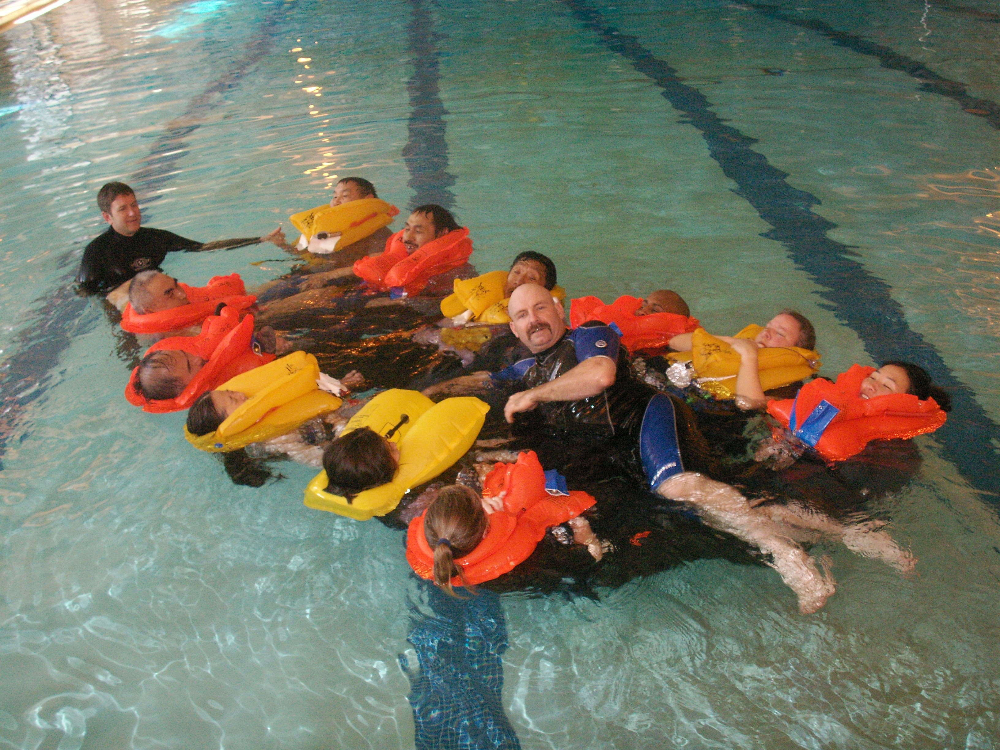

7 Field Safety
7.1 Training
The lab keeps track of fieldwork training completed by all personnel in a MML Training Database. The database is organized by Program and maintained by the MML Operations team. To update your information, email a copy of your training certificate to Jim Freed (james.freed@noaa.gov).
7.1.1 Aviation



NOAA’s Office of Marine and Aviation Operations (OMAO) governs the Aviation Safety Program which provides policy and guidance to support the safe operation and use of aircraft.
An overview of all safety-related training that is required or recommended for MML staff and affiliates is detailed in the MML Safety Training Memo. Training specific to aerial surveys is outlined in bullet 4 of the memo and included below.
All participants in NOAA aerial surveys must complete the following:
| Training | Required Frequency | Recommended Frequency | Notes |
|---|---|---|---|
| Aviation Egress | every 5 years | every 3 years | |
| Helicopter Emergency Egress Device (HEED) | every 5 years | Can be combined with Aviation Egress. Only need if carrying a HEED device. |
|
| Aviation Safety & Cold Weather Survival | every 5 years | every 3 years | Topics are covered in and combined with Aviation Egress. |
| Egress Videos | annually | 2.5 hours of material | |
| Online Commerce Learning Center (CLC) Courses | annually | Recommended for contracted transport flights to/from remote field sites. The three aviation courses include: 1) NOAA Aviation Policy & Procedures, 2) Basic Aviation Safety & Survival, and 3) Aviation Health. |
7.1.2 Small boats…
7.2 Aviation Safety Equipment

This section provides a centralized place for personnel to find information about aviation safety equipment that is shared among MML Programs. It includes information about aviation safety equipment inventory, usage, and maintenance.
Relevant Acronyms
- AOC - Aircraft Operations Center
- ELT - emergency location transmitter
- HEED - helicopter emergency egress device (compressed air bottle)
- OMAO - Office of Marine and Aviation Operations
- PFD - personal floatation device
- PLB - personal locator beacon
When flying on aircraft owned by NOAA’s AOC, you will only need to supply your own aviation drysuit. The following safety gear is usually provided by AOC: immersion (gumby) suits, PFDs, HEEDs, and PLBs. Additionally, the aircraft is equipped with a liferaft, first aid kit, fire containment kit (for laptop fires, etc.), fire extinguishers, and ELTs. Check with your AOC Programs liaison to verify what equipment will be provided for your project.
When flying on other aircraft, contact the vendor to verify what equipment they provide versus what equipment you need to supply yourself.
7.2.1 Aviation drysuits
The Lab’s aviation drysuits are currently located in the MML cage in Building 32. Contact your Program Leader for access to the cage.
The aviation drysuits are inventoried in the AerialDrySuitDatabase.accdb on the LAN (/Programs_Share/NMML_Documents/Aviation_Equipment_&_Training/Aerial Dry Suits). Contact Christy Sims if you have updates for the database (christy.sims@noaa.gov).
Check-out procedures
To reserve aviation drysuits for a project, use the Aviation Drysuit Schedule to see which drysuits are available and hold them for specific dates. Use the previous year’s tab to see reservation conventions for various projects.
Contact Christy Sims with your reservation request. She will make the appropriate updates to the database. During check-out and check-in, visually inspect each suit for the following: condition of rubber neck seal, condition of rubber wrist seals, condition of foot seams, fleece liner present, hood present, gloves present, and neck ring present.
Keep track of the number of days each suit is worn during your project as well as any issues or repairs needed. Provide this information when you return your suit. This information is tracked to determine maintenance needs.
Maintenance
- Aviation drysuits are expensive; please handle with care.
- Regularly wax zippers.
- Use talcum or baby powder around rubber seals to keep material pliable and reduce tearing.
- Add washing procedures?
7.2.2 Immersion (Gumby) Suits
7.2.3 PFDs and Accessories
7.2.4 HEEDs
7.2.5 Personal Locator Beacons (PLBs)
Each Program in MML manages their own PLBs. Maintanence of PLBs includes keeping registration up-to-date, testing and replacing batteries, and following regular servicing schedules. Points of contact for PLB management in each Program are below.
| Program | Contact | |
|---|---|---|
| AEP | Katie Luxa | katie.luxa@noaa.gov |
| CAEP | ||
| PEP | Heather Ziel | heather.ziel@noaa.gov |
7.2.6 Helmets
When chartering helicopters, verify with the vendor or operator whether helmets are provided. When using fixed-wing aircraft, helmets are optional but may be used as an added safety precaution during takeoffs and landings. PEP has several helmets in its Program inventory. Contact John Jansen (john.jansen@noaa.gov) for more information.